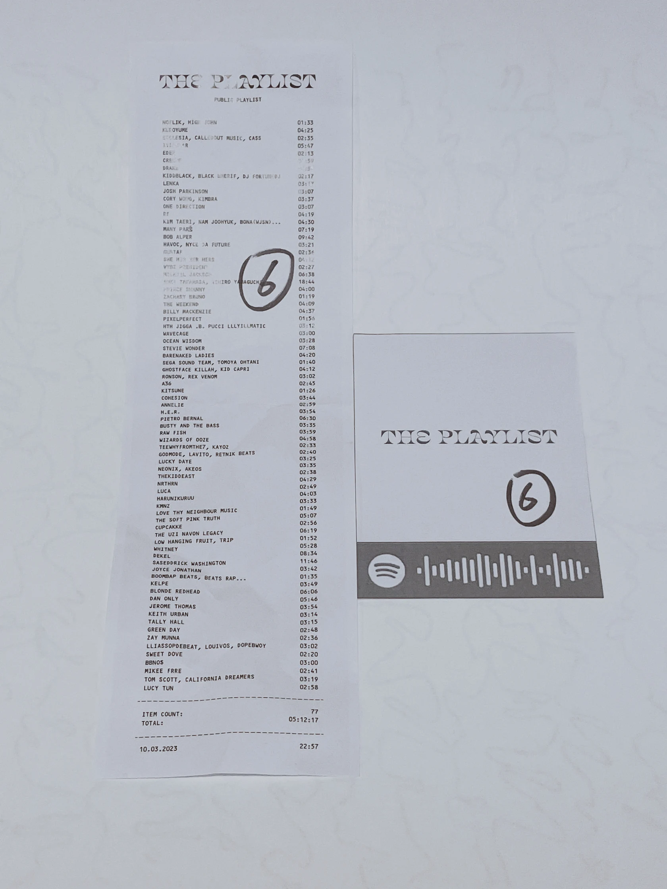
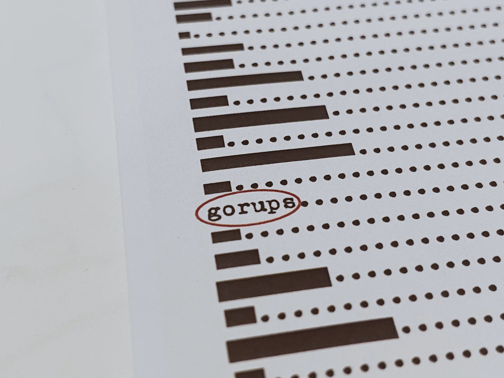
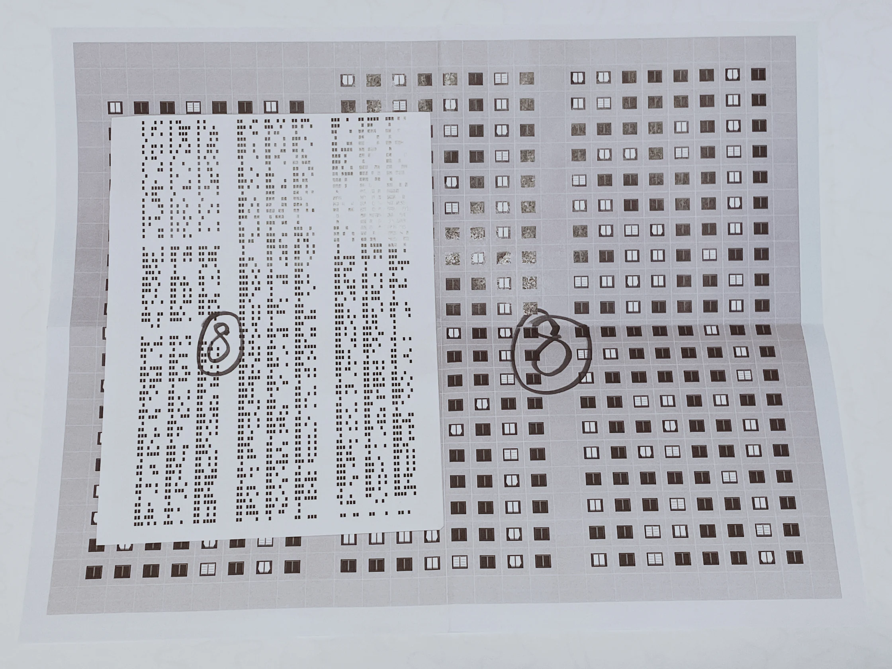
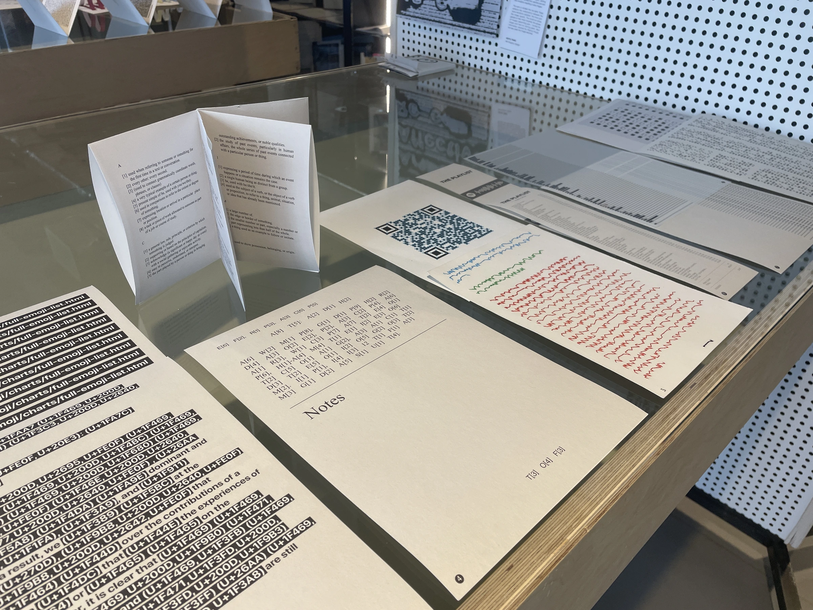
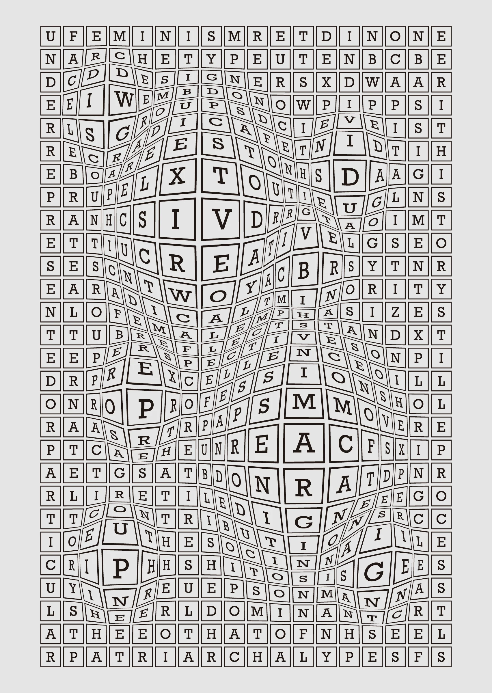

Messy and Neat：文本解码与互动阅读
将女性主义与设计教育理论文本转化为八组按难度分级的实体纸面解谜游戏，探索编码规则、提示机制与主动阅读之间的关系。
《Messy and Neat》是一个将理论文本转化为实体互动阅读体验的实验解谜项目，名称取自设计史学者 Martha Scotford 的经典论文 Messy History vs. Neat History。项目以 Frances Pharr 与 Leigh Mignogna 探讨女性主义、激进教育学与设计史边缘叙事的文本为起点——既然主流设计史常常为了“整洁的线性叙事”而抹去边缘群体的贡献，那么读者在面对这段文字时，是否也该放弃被动顺滑的浏览，转而在混乱、费力、需要不断查证与怀疑的解码过程中重新“读懂”它？基于这一设想，我将同一段原文重构为八组机制各异的谜面（messy）与配套线索（neat），最终在校园展厅以实体互动阅读台的形式展出。
从折页 Zine 到双盒散页的结构推翻
第一版原型曾被装订成三本风琴折页小册，但经过同学试玩测试，很快暴露出严重的操作障碍：当谜面与线索被死死锁在折页的不同页面上时，读者根本无法将它们并排摊开、对照比对。第二版起，我彻底推翻了整册装订，把八组文本拆解为带统一编号的独立纸页，分装进 messy 与 neat 两个浅盒中，并配合半透明硫酸纸、手工缝线与热敏收据等不同材质，让“阅读”真正成为一场需要动手翻找与比对的桌面对话。
八组递进解谜与材质/心理机关
八组文本按解码难度由浅入深排列，依次涵盖国际音标、Scrabble 填字格、Unicode Emoji 编码、全词编号词典、盲文连线、歌单小票、打字时间戳与二进制方块。其中四组最能体现我在媒介转译与玩家心理博弈上的尝试：
盲文刺孔缝线与“吉他误导陷阱”（第 5 关）：先用针在纸面扎出真实盲文凸点，再穿彩色丝线将点阵连成折线以分散视线；更关键的是，线索页放了一个指向吉他弹奏视频的二维码——我把盲文 1–6 号点位映射到六根琴弦弹成乐曲，却故意让这段提示无法直接解题。这是一次有意识的心理误导，专门用来打破读者在第 4 关（全词词典索引）养成的“无脑依赖提示”惯性，迫使他们回到纸面本身重新审视规则。
Spotify 歌单购物小票（第 6 关）：用 77 首与原文逐词同名的歌曲拼出一份歌单；谜面印成一张只保留歌手与时长、隐去歌名的超市购物小票，线索则是可扫码跳转的 Spotify 分享卡。

打字时间戳与唯一错字彩蛋（第 7 关）：记录敲下原文每一个词的精确时间，将提示印在半透明硫酸纸上叠合核对；整页勾选框中唯一一个叉号，指向我在录入时唯一打错的词 gorups。

二进制方块与亮灯公寓海报（第 8 关）：将文本转成二进制后删掉所有 0、把 1 变成方块；线索做成一张建筑立面海报，刻意采用与谜面相反的视觉逻辑（关灯黑窗＝0、开灯白窗＝1），提醒读者“空白之处同样藏着信息”。



实体展陈与互动现场
最终展出时，我将 messy 与 neat 两套散页分别陈列于浅盒与玻璃长台，供观众自由抽取、叠合硫酸纸并扫码验证；墙面同步悬挂由填字格与盲文折线放大的视觉海报及极简规则说明卡，形成从远观视觉吸引到近距离动手解谜的完整展厅动线。




项目总结
《Messy and Neat》本质上是一次把“阅读体验”当作“游戏关卡”来设计的实验。当原本一目十行的学术段落被拆解成需要查表、扫码、叠纸甚至识破误导提示的物理机关时，观众不再只是单向接收观点的旁观者，而是在反复试错与重构规则的过程中，切身经历了一次去中心化、非线性的“混乱阅读”。